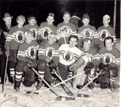

|

[Klicka
på bilden för att förstora]
Fotograf & fotots innehavare:
Bert Johansson
Bakre raden från vänster:
Gunnar Ingesson, lagledare, Conny Leidermark, Åke Sundström,
Jan Nilsson, Göran Söderbäck, Börje Söderbäck och Nils Ekström.
Främre raden:
Sture Sjödin, Bernt Östberg, Per Leonardsson, Börje Ferm och
Claes Andersson.
|